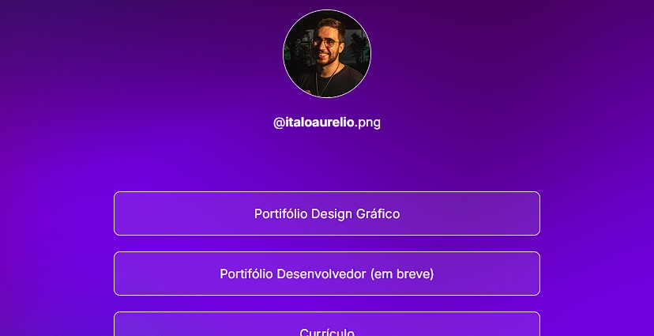
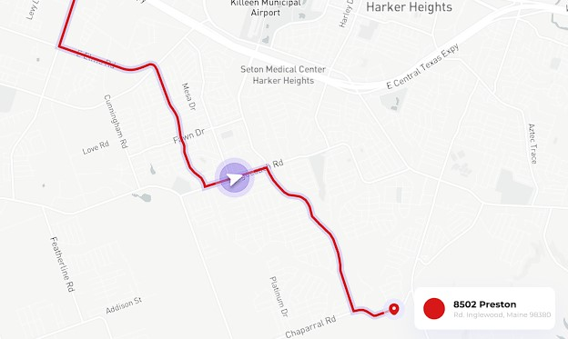

#VEL.IO
Projeto de interface gráfica que visa ajudar pessoas idosas
e deficiêntes motores com o uso da técnologia no dia a dia.

#PORTIFÓLIO
Porttifólio própio, para uso nas redes sociais, com o intúito
de facilitar o acesso aos meus projetos e contatos.

#RASTREIO
Site para rastreiro de uma empresa sigilosa, de ramo transporte.